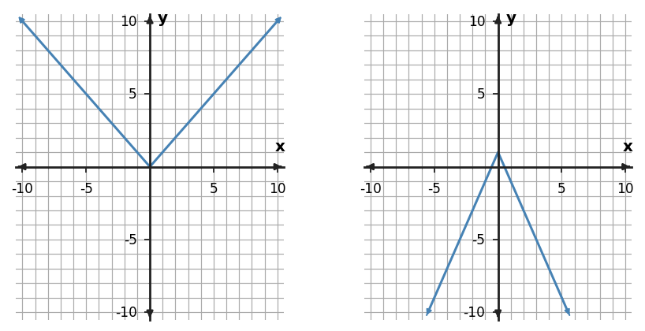

Transformations
Function Families and Transformations
A transformation is one rule acting on every point.
Learning Target
Students will analyze and graph transformations involving stretches, compressions, and reflections.
- I can design transformed graphs using stretches, compressions, reflections, and translations of parent functions.
- I can apply transformation rules to key points and features across function families.
- I can assess whether an equation, graph, or table represents the same transformed function.
Vocabulary / Key Notation Preview
stretch · compression · reflection · translation · transformation parameter
Sort the vocabulary. Write each vocabulary word in the column that best matches what you know right now. You may move a word later.
| Know for sure | Recognize | Don't know yet |
|---|---|---|
What's to Come
DO NOT SOLVE IT YET.
Circle anything familiar, underline symbols, labels, conditions, data, or features that seem important, and write short notes about what you think may matter later.
A parent absolute-value relationship is changed. Use the table to describe what happened to the outputs, predict the new graph shape, and then compare your prediction with the graph pair.
| x | parent y | new y |
|---|---|---|
| -2 | 2 | -4 |
| -1 | 1 | -2 |
| 0 | 0 | 0 |
| 1 | 1 | -2 |
| 2 | 2 | -4 |

Let's Get Started
Skim the section. Record what catches your attention before you read closely.
| What I noticed | |
|---|---|
| What I predict | |
| What I wonder |
Annotate the words and visuals together. Underline evidence, circle or highlight bold vocabulary, label arrows, measurements, or important features, connect sentences to figures, and jot short questions or connections in the margins.
I can design transformed graphs using stretches, compressions, reflections, and translations of parent functions.
A transformation changes a parent function in a controlled way. Translations relocate the graph, while a stretch, compression, or reflection changes how the outputs are positioned relative to an axis. The important idea is that one parameter can act on every point according to the same rule.
A vertical scale factor multiplies outputs. If $g(x)=a f(x)$, then $(x,y)$ on the parent becomes $(x,ay)$. When $|a|\gt1$, nonzero y-values move farther from the x-axis, producing a vertical stretch. When $0\lt|a|\lt1$, they move closer to the x-axis, producing a vertical compression.
A negative scale factor also changes sign. In $g(x)=-f(x)$, every positive output becomes negative and every negative output becomes positive, so the graph is reflected across the x-axis. If the magnitude is not 1, the reflection and vertical scaling happen together.
Transformations can be combined. In a form such as $g(x)=a f(x-h)+k$, the inside shift relocates inputs, the factor $a$ changes outputs and possibly reflects them, and $k$ shifts outputs vertically. Designing the graph means applying these changes consistently to a set of key features, not changing each point independently.
- In $g(x)=a f(x)$, which coordinate is multiplied by $a$?
- What range of $|a|$ produces a vertical compression?
- What additional effect occurs whenever $a\lt0$?
| Rule | Point change | Visual effect |
|---|---|---|
| $g(x)=2f(x)$ | $(x,y)\to(x,2y)$ | vertical stretch |
| $g(x)=\frac12f(x)$ | $(x,y)\to(x,\frac12 y)$ | vertical compression |
| $g(x)=-f(x)$ | $(x,y)\to(x,-y)$ | reflection over x-axis |
| $g(x)=-2f(x)$ | $(x,y)\to(x,-2y)$ | reflection + stretch |
Example 1
Describe the transformation from $y=x^2$ to $y=-3x^2$.
You Try It 1
The parent values come from $y=x^2$. Apply the rule $g(x)=-6f(x)$ and complete the transformed y-values.
| x | Parent y | Transformed y |
|---|---|---|
| -2 | 4 | ? |
| -1 | 1 | ? |
| 0 | 0 | ? |
| 1 | 1 | ? |
| 2 | 4 | ? |
- If a parent point is $(3,-2)$, where does it move under $g(x)=-\tfrac12 f(x)$?
Example 2
The parent values come from $y=x^2$. Apply the rule $g(x)=-4f(x)$ and complete the transformed y-values.
| x | Parent y | Transformed y |
|---|---|---|
| -2 | 4 | ? |
| -1 | 1 | ? |
| 0 | 0 | ? |
| 1 | 1 | ? |
| 2 | 4 | ? |
You Try It 2
Compare the left parent graph and the right transformed graph. Describe the transformation using stretch/compression/reflection language.

I can apply transformation rules to key points and features across function families.
Key points let you apply transformation rules without guessing the whole graph. Start with coordinates that describe the parent function clearly: a vertex, intercept, corner, or a point one unit from the center. Then apply the same algebraic rule to every chosen point.
For vertical scaling, x-coordinates stay fixed while y-coordinates are multiplied. This immediately preserves some features and changes others. A point on the x-axis stays on the x-axis because multiplying 0 still gives 0; a vertex with y=0 stays at the same vertical level under pure vertical scaling, although the sides may become steeper or flatter.
Tables are coordinate lists, so they obey the same rule. If a parent table has outputs $0,1,4,9$, multiplying the function by 2 produces $0,2,8,18$. If the multiplier is negative, each output changes sign. This is a reliable way to build a transformed table before graphing.
When translations are included too, separate the jobs. Move x-coordinates according to the horizontal translation and modify y-coordinates according to the vertical scale/reflection and vertical shift. Keeping input changes and output changes distinct prevents inconsistent point movement.
- Why does an x-intercept stay an x-intercept under a pure nonzero vertical stretch?
- What happens to every y-value in a table under $g(x)=-3f(x)$?
- Why is it useful to separate input changes from output changes when several transformations are combined?
- List 3–5 parent key points.
- Apply horizontal movement to each x-coordinate.
- Multiply outputs by the vertical factor; reverse sign if the factor is negative.
- Apply the vertical shift.
- Plot and reconnect points using the parent family shape.
The same workflow can be applied to a table because each row is simply an $(x,y)$ point.
Example 3
Compare the left parent graph and the right transformed graph. Describe the transformation using stretch/compression/reflection language.

You Try It 3
For $f(x)=|x|$, compare $g(x)=-4f(x)$ with the table of points $(-2,-8), (-1,-4), (0,0), (1,-4), (2,-8)$. Do the equation and table represent the same transformed function? Explain.
- A student stretches only the vertex and leaves the other parent points unchanged. What property of a transformation has been violated?
Example 4
For $f(x)=|x|$, apply $g(x)=3f(x)$ to the key points shown in the table and describe the transformation.
| x | $f(x)$ | $g(x)$ |
|---|---|---|
| -2 | 2 | ? |
| -1 | 1 | ? |
| 0 | 0 | ? |
| 1 | 1 | ? |
| 2 | 2 | ? |
You Try It 4
A student says multiplying $f(x)$ by 12 moves its graph right 12 units. Correct the transformation description.
I can assess whether an equation, graph, or table represents the same transformed function.
Two representations describe the same transformed function only when their features and values agree. Matching a general shape is not enough. A graph, equation, and table should predict the same key points, intercepts, symmetry, and transformed outputs.
Equations provide a compact transformation rule. A graph shows the accumulated visual effect. A table gives exact point-by-point evidence. To test equivalence, select a feature that should be easy to verify in all available forms, such as a vertex, an intercept, or the output at a convenient x-value.
Misleading matches often come from partial agreement. Two graphs may share the same vertex but have different steepness; two equations may share the same shift but use different vertical factors; two tables may match at one point but diverge elsewhere. One matching feature is evidence, not proof.
A strong assessment of equivalence uses at least one structural feature and one numerical check. If those agree and the transformation rules are consistent, the representations support the same function. If they conflict, identify which parameter or point breaks the match.
- Why is a shared vertex alone not enough to prove two transformed functions are the same?
- Name one numerical check that can compare an equation and a graph.
- What kind of evidence is strongest when deciding whether two representations show the same transformed function?
- Equation: read shift, scale, and reflection parameters.
- Graph: inspect key points, orientation, and relative steepness.
- Table: verify transformed coordinate pairs exactly.
One matching point is not enough. Check a defining feature and at least one additional value.
Example 5
A student calls $g(x)=\frac{1}{3}f(x)$ a vertical stretch because the coefficient is positive. Correct the claim.
You Try It 5
For $f(x)=x^2$, compare $g(x)=-\frac12 f(x)$ with the table. Do the equation and table represent the same transformed function?
| x | $g(x)$ |
|---|---|
| -2 | -2 |
| -1 | -0.5 |
| 0 | 0 |
| 1 | -0.5 |
| 2 | -2 |
- Two transformed parabolas have the same vertex, but one opens up and the other opens down. Can they represent the same function?
Example 6
Describe the transformation from $y=x^2$ to $y=2x^2$.
You Try It 6
The right graph is claimed to represent $g(x)=\frac12x^2$ when the left graph is $f(x)=x^2$. Use the graphs to assess the claim.
Summary
- Vertical scale factors multiply outputs; magnitudes above 1 stretch and magnitudes between 0 and 1 compress.
- Negative output factors reflect a graph across the x-axis.
- Transformation rules must be applied consistently to all key points or table values.
- Equivalent equation, graph, and table representations agree on defining features and exact values, not only on general shape.
Common Mistakes
| Watch for | Better move |
|---|---|
| Confusing vertical stretch/compression with horizontal movement. | Check the defining structure or representation evidence before committing to the conclusion. |
| Reflecting or scaling points inconsistently across the graph. | Check the defining structure or representation evidence before committing to the conclusion. |